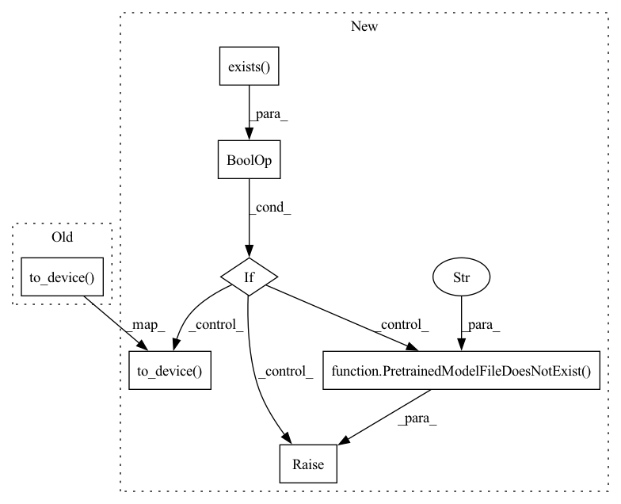

Pattern ID :12143

Before Change
def post_init(self):
super().post_init()
self.to_device()
import tensorflow as tf
self.logger.info(f"model_path: {self.model_path}")
_model = tf.saved_model.load(self.model_path)
self.model = _model.signatures["serving_default"]
After Change
def post_init(self):
super().post_init()
if self.model_path and os.path.exists(self.model_path):
self.to_device()
import tensorflow as tf
self.logger.info(f"model_path: {self.model_path}")
_model = tf.saved_model.load(self.model_path)
self.model = _model.signatures["serving_default"]
self._get_input = tf.convert_to_tensor
else:
raise PretrainedModelFileDoesNotExist(f"model at {self.model_path} does not exist")
@batching
@as_ndarray
def encode(self, data: "np.ndarray", *args, **kwargs) -> "np.ndarray":
In pattern: SUPERPATTERN
Frequency: 3
Non-data size: 7
Instances
Fragment ID: 41010235
Project Name: jina-ai/jina-hub
Commit Name: 1d9fa366099ba620342cacce8215ce4eac6a6ba6
Time: 2020-10-13
Author: artex.xh@gmail.com
File Name: encoders/image/BigTransferEncoder/__init__.py
M Class Name: BigTransferEncoder
N Class Name: BigTransferEncoder
M Method Name: post_init(1)
N Method Name: post_init(1)
M Parent Class: BaseTFEncoder
N Parent Class: BaseTFEncoder
M File Name: encoders/image/BigTransferEncoder/__init__.py
N File Name: encoders/image/BigTransferEncoder/__init__.py
M Start Line: 51
M End Line: 56
N Start Line: 53
N End Line: 63
'>
Before Change
self.pool_fn = getattr(np, self.pool_strategy)
self.model = torch.load(self.model_path)
self.model.eval()
self.to_device(self.model)
self.layer = getattr(self.model, self.layer_name)
def _get_features(self, data):
feature_map = None
After Change
def post_init(self):
super().post_init()
import torch
if self.model_path and os.path.exists(self.model_path):
if self.pool_strategy is not None:
self.pool_fn = getattr(np, self.pool_strategy)
self.model = torch.load(self.model_path)
self.model.eval()
self.to_device(self.model)
self.layer = getattr(self.model, self.layer_name)
else:
raise PretrainedModelFileDoesNotExist(f"model {self.model_path} does not exist")
def _get_features(self, data):
feature_map = None
'>
Fragment ID: 41010234
Project Name: jina-ai/jina-hub
Commit Name: 690936cca12a16011a01a1b6b9a17a2170d39c19
Time: 2020-10-13
Author: artex.xh@gmail.com
File Name: encoders/image/CustomImageTorchEncoder/__init__.py
M Class Name: CustomImageTorchEncoder
N Class Name: CustomImageTorchEncoder
M Method Name: post_init(1)
N Method Name: post_init(1)
M Parent Class: BaseTorchEncoder
N Parent Class: BaseTorchEncoder
M File Name: encoders/image/CustomImageTorchEncoder/__init__.py
N File Name: encoders/image/CustomImageTorchEncoder/__init__.py
M Start Line: 37
M End Line: 42
N Start Line: 40
N End Line: 50
'>
Before Change
self.model = Wav2VecModel.build_model(cp["args"], task=None)
self.model.load_state_dict(cp["model"])
self.model.eval()
self.to_device(self.model)
self._tensor_func = torch.tensor
@batching
@as_ndarray
After Change
def post_init(self):
super().post_init()
if self.model_path and os.path.exists(self.model_path):
import torch
from fairseq.models.wav2vec import Wav2VecModel
cp = torch.load(self.model_path, map_location=torch.device("cpu"))
self.model = Wav2VecModel.build_model(cp["args"], task=None)
self.model.load_state_dict(cp["model"])
self.model.eval()
self.to_device(self.model)
self._tensor_func = torch.tensor
else:
raise PretrainedModelFileDoesNotExist(f"model at {self.model_path} does not exist")
@batching
@as_ndarray
def encode(self, data: np.ndarray, *args, **kwargs) -> np.ndarray:
'>
Fragment ID: 41010236
Project Name: jina-ai/jina-hub
Commit Name: d5875d1cbe107a3b42dcb785ae7bb5f6c319ce8d
Time: 2020-10-14
Author: artex.xh@gmail.com
File Name: encoders/audio/Wav2VecSpeechEncoder/__init__.py
M Class Name: Wav2VecSpeechEncoder
N Class Name: Wav2VecSpeechEncoder
M Method Name: post_init(1)
N Method Name: post_init(1)
M Parent Class: BaseTorchEncoder,BaseAudioEncoder
N Parent Class: BaseTorchEncoder,BaseAudioEncoder
M File Name: encoders/audio/Wav2VecSpeechEncoder/__init__.py
N File Name: encoders/audio/Wav2VecSpeechEncoder/__init__.py
M Start Line: 36
M End Line: 41
N Start Line: 36
N End Line: 48